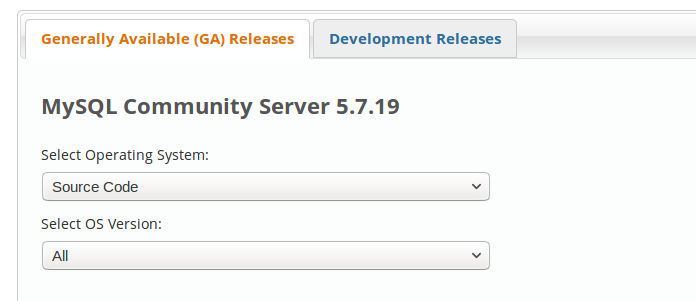
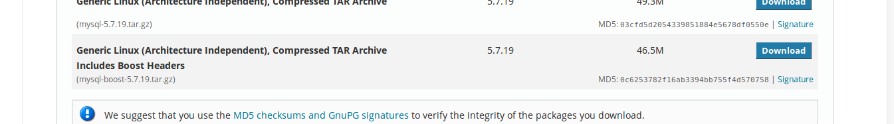
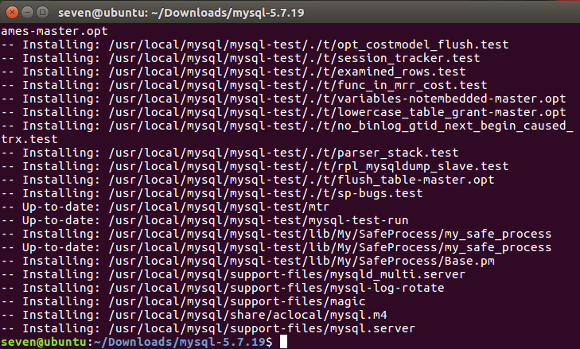

mysql编译安装折腾
下载安装MySQL
1 | https://dev.mysql.com/downloads/mysql/ |
选择 source code

在下拉列表中选择最后一个选项

安装依赖
下述这些依赖开始编译的时候，报错会要求安装一下这些库文件
cmake
cmake是一个款平台的安装编译工具，能够输出各种各样的makefile
apt-get install cmake -y
bootst
c++语言标准库提供扩展的一些c++库的总称
因为我们下载的是带bootst的mysql5.7源码包，因此在这里我们不需要安装这个类库
git
1 | apt-get install git -y |
linux常用的图形库
1 |
|
开始预编译
新建mysql目录
在/usr/local新建mysql目录
1 |
|
预编译
在我们解压过后的mysql文件目录下预编译1
2
cmake . -DCMAKE_INSTALL_PREFIX=/usr/local/mysql -DSYSCONFDIR=/etc -DDEFAULT_CHARSET=utf8 -DDEFAULT_COLLATION=utf8_general_ci -DMYSQL_DATADIR=/usr/local/mysql/data -DWITH_BOOST=boost
编译
1 |
|
编译成功
